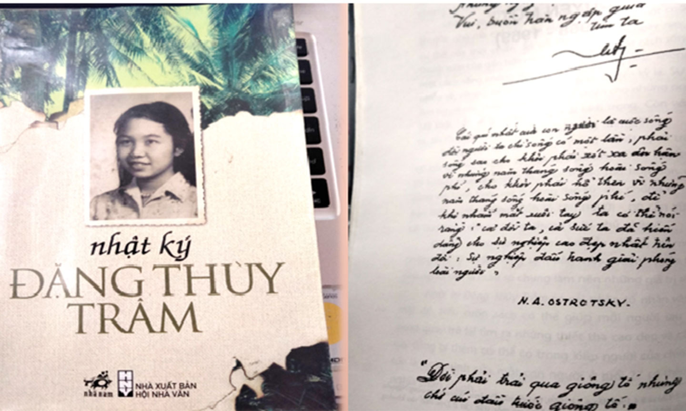

Thông tin tác phẩm
- Tác giả Đặng Thùy Trâm
- Thời kỳ Kháng chiến chống Mỹ
- Thể loại Nhật ký
- Xuất bản 2005

“Hãy quên đi mà tìm lại niềm hy vọng mới mẻ,
xanh tốt và trong lành hơn.”
“Rừng chiều sau một cơn mưa, những lá cây xanh trong trước ánh nắng,
mỏng mảnh xanh gầy như bàn tay một cô gái cấm cung.
Không khí trầm lặng và buồn lạ lùng...
Một nỗi nhớ mênh mang bao trùm quanh mình.
Nhớ ba, nhớ má, nhớ những người vừa ra đi…
Dù sao vết thương lòng vẫn đang rỉ máu,
dù mình có muốn lấy công việc đè lên trên,
nó vẫn trỗi dậy, xót xa vô cùng.
Hãy quên đi Th. ơi!
Hãy quên đi mà tìm lại niềm hy vọng mới mẻ
xanh tốt trong lành hơn.”